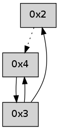

>> << IDX [start] -100 -25 -5 +0 +5 +25 +100 [235.041419983]
 Previous packets
----------------------------------------------------------------------
230.224068 beacon01(adaf) #0 coord=01,02,03,04 cycle=304.0ms assoc
-- color-indic=0 64 2f ed
230.234020 beacon02(adaf) #0 coord=01,02,03,04 cycle=304.0ms assoc 64 3f 88
230.244020 beacon03(adaf) #0 coord=01,02,03,04 cycle=304.0ms assoc 64 70 24
230.254020 beacon04(adaf) #0 coord=01,02,03,04 cycle=304.0ms assoc 64 ae 79
230.265698 [Hello(2): seq=509 sym=3 asym=4 sysInfo= stat=3:5,0,0,0/4:4,0,0,0]
----------------------------------------------------------------------
230.568164 beacon01(adaf) #0 coord=01,02,03,04 cycle=304.0ms assoc
-- color-indic=0 64 c1 a7
230.578116 beacon02(adaf) #0 coord=01,02,03,04 cycle=304.0ms assoc 64 d1 c2
230.588118 beacon03(adaf) #0 coord=01,02,03,04 cycle=304.0ms assoc 64 9e 6e
230.598117 beacon04(adaf) #0 coord=01,02,03,04 cycle=304.0ms assoc 64 40 33
230.609755 [Hello(4): seq=11 sym=3 sysInfo= stat=3:11,0,0,0]
----------------------------------------------------------------------
230.912260 beacon01(adaf) #0 coord=01,02,03,04 cycle=304.0ms assoc
-- color-indic=0 64 f3 78
230.922213 beacon02(adaf) #0 coord=01,02,03,04 cycle=304.0ms assoc 64 e3 1d
230.932213 beacon03(adaf) #0 coord=01,02,03,04 cycle=304.0ms assoc 64 ac b1
230.942214 beacon04(adaf) #0 coord=01,02,03,04 cycle=304.0ms assoc 64 72 ec
230.953875 [Hello(2): seq=510 sym=3 asym=4 sysInfo= stat=3:5,0,0,0/4:5,0,0,0]
----------------------------------------------------------------------
231.256360 beacon01(adaf) #0 coord=01,02,03,04 cycle=304.0ms assoc
-- color-indic=0 64 1d 32
231.266312 beacon02(adaf) #0 coord=01,02,03,04 cycle=304.0ms assoc 64 0d 57
231.276313 beacon03(adaf) #0 coord=01,02,03,04 cycle=304.0ms assoc 64 42 fb
231.286313 beacon04(adaf) #0 coord=01,02,03,04 cycle=304.0ms assoc 64 9c a6
231.297928 PARSE ERROR************************
Traceback (most recent call last):
File "PacketAnalysis.py", line 167, in showOperaPacket
structPacket = OperaPacketParse.parsePacket(rawPacket)
File "../../pkg-python/HipSens/Core/OperaPacketParse.py", line 461, in parsePacket
return parseHelloMessage(data)
File "../../pkg-python/HipSens/Core/OperaPacketParse.py", line 127, in parseHelloMessage
assert struct.calcsize("H")*len(neighAddrList) == len(linkList)
AssertionError
48 14 04 00 00 0c 00 02 02 02 03 00 53 04 00 00 00 00 4c 02 00 0c 4c 6c
----------------------------------------------------------------------
231.600456 beacon01(adaf) #0 coord=01,02,03,04 cycle=304.0ms assoc
-- color-indic=0 64 86 ce
231.610408 beacon02(adaf) #0 coord=01,02,03,04 cycle=304.0ms assoc 64 96 ab
231.620409 beacon03(adaf) #0 coord=01,02,03,04 cycle=304.0ms assoc 64 d9 07
231.630410 beacon04(adaf) #0 coord=01,02,03,04 cycle=304.0ms assoc 64 07 5a
----------------------------------------------------------------------
231.944552 beacon01(adaf) #0 coord=01,02,03,04 cycle=304.0ms assoc
-- color-indic=0 64 68 84
231.954506 beacon02(adaf) #0 coord=01,02,03,04 cycle=304.0ms assoc 64 78 e1
231.964504 beacon03(adaf) #0 coord=01,02,03,04 cycle=304.0ms assoc 64 37 4d
231.974504 beacon04(adaf) #0 coord=01,02,03,04 cycle=304.0ms assoc 64 e9 10
231.986117 [Hello(4): seq=13 sym=3 sysInfo= stat=3:13,0,0,0]
----------------------------------------------------------------------
232.288648 beacon01(adaf) #0 coord=01,02,03,04 cycle=304.0ms assoc
-- color-indic=0 64 5a 5b
232.298602 beacon02(adaf) #0 coord=01,02,03,04 cycle=304.0ms assoc 64 4a 3e
232.308601 beacon03(adaf) #0 coord=01,02,03,04 cycle=304.0ms assoc 64 05 92
232.318601 beacon04(adaf) #0 coord=01,02,03,04 cycle=304.0ms assoc 64 db cf
232.330253 [Hello(2): seq=512 asym=4 sysInfo= stat=4:7,0,0,0]
----------------------------------------------------------------------
232.632744 beacon01(adaf) #0 coord=01,02,03,04 cycle=304.0ms assoc
-- color-indic=0 64 b4 11
232.642697 beacon02(adaf) #0 coord=01,02,03,04 cycle=304.0ms assoc 64 a4 74
232.652698 beacon03(adaf) #0 coord=01,02,03,04 cycle=304.0ms assoc 64 eb d8
232.662697 beacon04(adaf) #0 coord=01,02,03,04 cycle=304.0ms assoc 64 35 85
232.674296 [Hello(4): seq=14 sym=3 sysInfo= stat=3:14,0,0,0]
----------------------------------------------------------------------
232.976841 beacon01(adaf) #0 coord=01,02,03,04 cycle=304.0ms assoc
-- color-indic=0 64 7d aa
232.986793 beacon02(adaf) #0 coord=01,02,03,04 cycle=304.0ms assoc 64 6d cf
232.996793 beacon03(adaf) #0 coord=01,02,03,04 cycle=304.0ms assoc 64 22 63
233.006794 beacon04(adaf) #0 coord=01,02,03,04 cycle=304.0ms assoc 64 fc 3e
----------------------------------------------------------------------
233.320937 beacon01(adaf) #0 coord=01,02,03,04 cycle=304.0ms assoc
-- color-indic=0 64 93 e0
233.330889 beacon02(adaf) #0 coord=01,02,03,04 cycle=304.0ms assoc 64 83 85
233.340891 beacon03(adaf) #0 coord=01,02,03,04 cycle=304.0ms assoc 64 cc 29
233.350890 beacon04(adaf) #0 coord=01,02,03,04 cycle=304.0ms assoc 64 12 74
233.362503 [Hello(4): seq=15 sym=3 sysInfo= stat=3:15,0,0,0]
----------------------------------------------------------------------
233.665034 beacon01(adaf) #0 coord=01,02,03,04 cycle=304.0ms assoc
-- color-indic=0 64 a1 3f
233.674986 beacon02(adaf) #0 coord=01,02,03,04 cycle=304.0ms assoc 64 b1 5a
233.684987 beacon03(adaf) #0 coord=01,02,03,04 cycle=304.0ms assoc 64 fe f6
233.694987 beacon04(adaf) #0 coord=01,02,03,04 cycle=304.0ms assoc 64 20 ab
233.706621 [Hello(2): seq=514 asym=4 sysInfo= stat=4:9,0,0,0]
----------------------------------------------------------------------
234.009130 beacon01(adaf) #0 coord=01,02,03,04 cycle=304.0ms assoc
-- color-indic=0 64 4f 75
234.019083 beacon02(adaf) #0 coord=01,02,03,04 cycle=304.0ms assoc 64 5f 10
234.029083 beacon03(adaf) #0 coord=01,02,03,04 cycle=304.0ms assoc 64 10 bc
234.039084 beacon04(adaf) #0 coord=01,02,03,04 cycle=304.0ms assoc 64 ce e1
234.050697 [Hello(4): seq=16 sym=3 sysInfo= stat=3:0,0,0,0]
----------------------------------------------------------------------
234.353226 beacon01(adaf) #0 coord=01,02,03,04 cycle=304.0ms assoc
-- color-indic=0 64 d4 89
234.363179 beacon02(adaf) #0 coord=01,02,03,04 cycle=304.0ms assoc 64 c4 ec
234.373179 beacon03(adaf) #0 coord=01,02,03,04 cycle=304.0ms assoc 64 8b 40
234.383181 beacon04(adaf) #0 coord=01,02,03,04 cycle=304.0ms assoc 64 55 1d
234.394814 [Hello(2): seq=515 asym=4 sysInfo= stat=4:10,0,0,0]
----------------------------------------------------------------------
234.697323 beacon01(adaf) #0 coord=01,02,03,04 cycle=304.0ms assoc
-- color-indic=0 64 3a c3
234.707276 beacon02(adaf) #0 coord=01,02,03,04 cycle=304.0ms assoc 64 2a a6
234.717277 beacon03(adaf) #0 coord=01,02,03,04 cycle=304.0ms assoc 64 65 0a
234.727276 beacon04(adaf) #0 coord=01,02,03,04 cycle=304.0ms assoc 64 bb 57
234.738908 [Hello(4): seq=17 sym=3 sysInfo= stat=3:1,0,0,0]